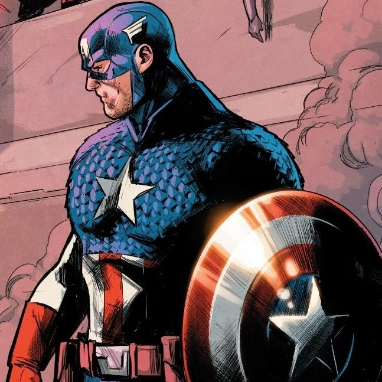
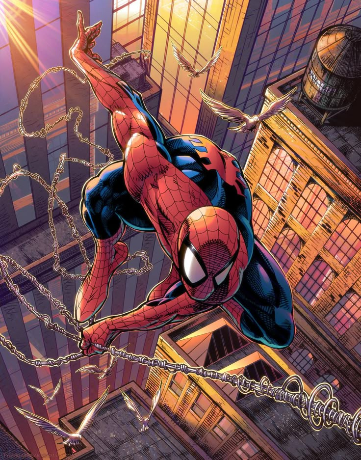
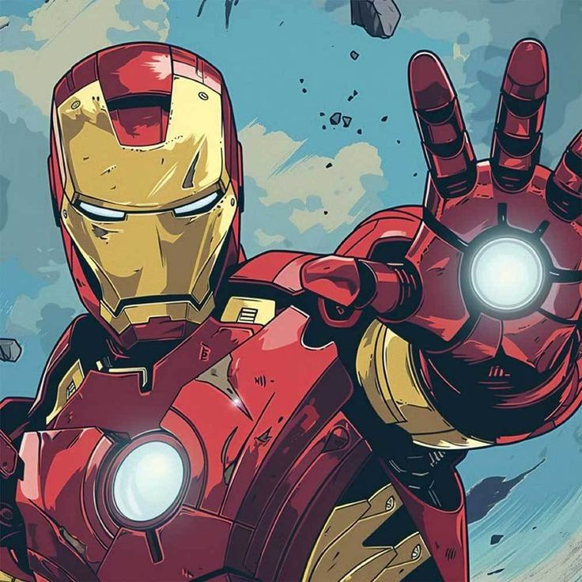
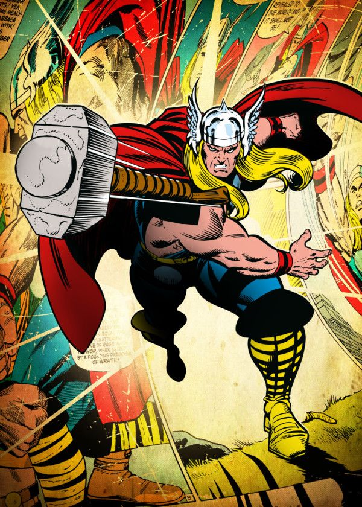
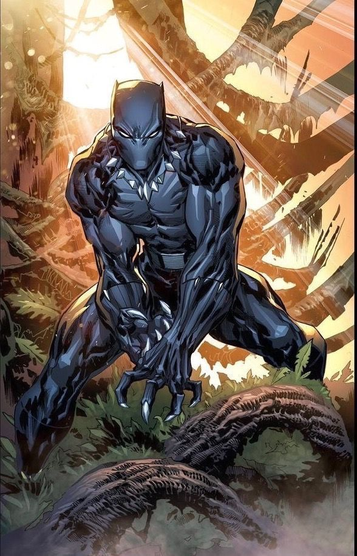
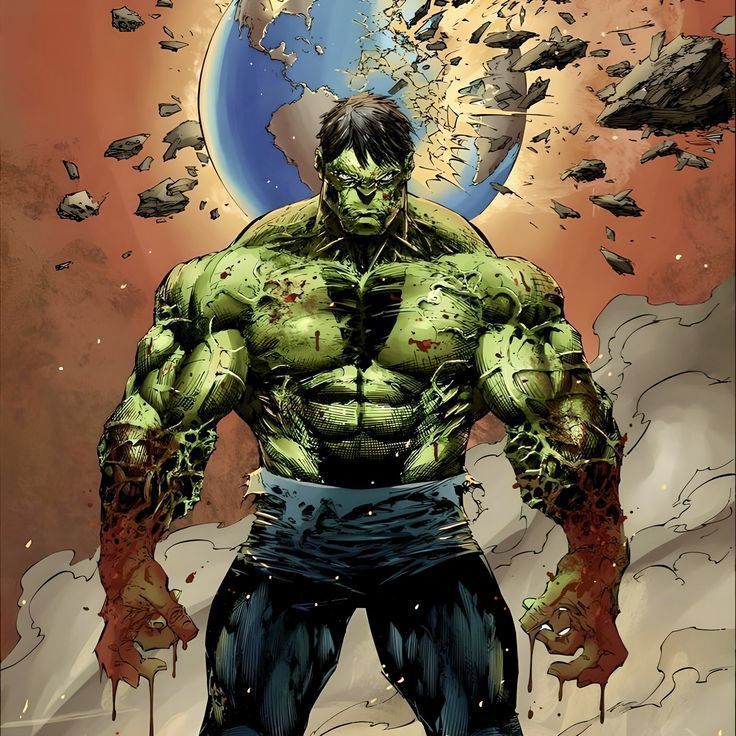
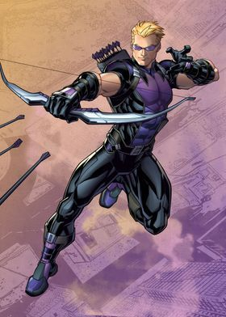
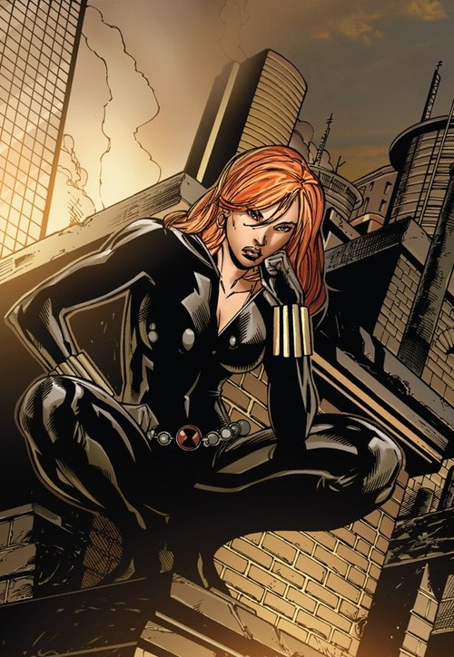
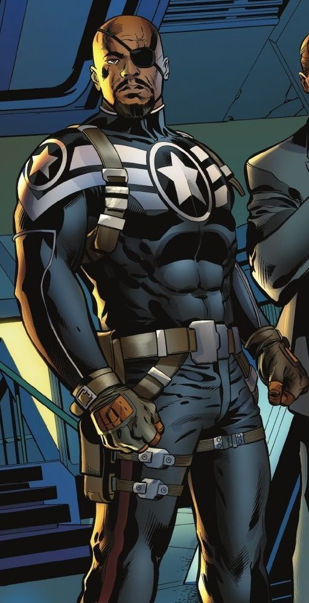

- CAPITAN AMERICA
- Capitan America es uno de los superheroes mas emblematicos del universo Marvel. Su verdadero nombre es Steve Rogers, un joven fragil pero valiente que se ofrecio como voluntario para un experimento militar durante la Segunda Guerra Mundial. Gracias al suero del supersoldado, obtuvo fuerza, agilidad y resistencia sobrehumanas. Con su iconico escudo y un fuerte sentido del deber, se convirtio en el simbolo del heroismo, la justicia y la libertad, enfrentando amenazas tanto humanas como cosmicas a lo largo de varias decadas.

- SPIDER-MAN
- Spiderman es uno de los superheroes mas populares de Marvel. Su nombre real es Peter Parker, un joven estudiante que adquirio poderes aracnidos tras ser mordido por una araña radiactiva. Desde entonces, ha usado sus habilidades para combatir el crimen en Nueva York, enfrentando a villanos como el Duende Verde, el Doctor Octopus y Venom. A pesar de sus responsabilidades como heroe, Peter tambien lucha por equilibrar su vida personal y su sentido del deber, guiado por la frase: "Un gran poder conlleva una gran responsabilidad".

- IRON MAN
- Iron Man es el alter ego de Tony Stark, un genio multimillonario, inventor y empresario del universo Marvel. Tras sufrir una grave herida, construyo una armadura de alta tecnologia para salvar su vida y escapar de sus captores. Desde entonces, ha perfeccionado su traje para combatir amenazas globales como superheroe. A pesar de su actitud arrogante, Tony demuestra un fuerte compromiso con la proteccion del mundo, convirtiendose en uno de los miembros mas importantes de los Vengadores.

- THOR
- Thor es el dios del trueno en el universo Marvel y uno de los personajes mas poderosos. Es hijo de Odin, rey de Asgard, y hermano adoptivo de Loki. Empuña el martillo magico Mjolnir, que le permite volar, invocar rayos y luchar contra enemigos colosales. Aunque al inicio era impulsivo y arrogante, su paso por la Tierra lo transformo en un heroe sabio y valiente. Ha sido pieza clave en muchas batallas junto a los Vengadores, defendiendo tanto Asgard como la humanidad de amenazas intergalacticas.

- BLACK PANTHER
- Black Panther es el nombre del heroe y rey de Wakanda, una nacion africana tecnologicamente avanzada y rica en vibranium. Su verdadero nombre es T'Challa, y heredo el manto de Pantera Negra tras la muerte de su padre. Gracias a una hierba mistica y a su entrenamiento, posee fuerza, velocidad y agilidad sobrehumanas, ademas de una armadura avanzada. Como lider, T'Challa lucha por proteger a su pueblo y por mantener el equilibrio entre la tradicion y el progreso. Tambien ha sido un valioso miembro de los Vengadores en sus batallas mas importantes.

- HULK
- Hulk es la poderosa y descontrolada transformacion del cientifico Bruce Banner, quien fue expuesto a rayos gamma durante un experimento fallido. Cuando Bruce se enfurece o se estresa, se convierte en una criatura verde de fuerza ilimitada y resistencia extrema. Aunque al principio era visto como una amenaza, con el tiempo Hulk se convirtio en un heroe esencial, enfrentando grandes peligros y ayudando a los Vengadores. La lucha interna entre su lado humano y su lado monstruoso es una de las partes mas complejas de su historia.

- HOWKEYE
- Hawkeye, cuyo nombre real es Clint Barton, es un experto arquero y miembro de los Vengadores. Aunque no posee superpoderes, su punteria es casi perfecta y ha sido entrenado en combate cuerpo a cuerpo, espionaje y estrategia. Trabaja con un arsenal de flechas especiales que usa en distintas situaciones. A pesar de ser un heroe discreto, ha demostrado gran valentia y lealtad en muchas batallas clave. Su compromiso con su familia y sus compañeros lo convierten en uno de los heroes mas humanos y confiables del equipo.

- BLACK WIDOW
- Black Widow, cuyo nombre real es Natasha Romanoff, es una espia y asesina entrenada desde joven por una organizacion secreta rusa. A pesar de su pasado oscuro, decidio cambiar y usar sus habilidades para hacer el bien. Es experta en artes marciales, infiltracion y uso de tecnologia avanzada. Aunque no tiene poderes sobrenaturales, su valentia, inteligencia y experiencia la han convertido en una pieza clave de los Vengadores. Natasha lucha no solo contra enemigos, sino tambien contra su propio pasado, buscando redencion a traves de sus acciones heroicas.

- NICK FURY
- Nick Fury es el exdirector de S.H.I.E.L.D., una organizacion de inteligencia encargada de proteger al mundo de amenazas globales. Es un estratega brillante, experto en espionaje y toma decisiones dificiles con sangre fria. Fury fue quien reunio por primera vez a los Vengadores, creyendo que el mundo necesitaba heroes unidos para enfrentar peligros mas alla de la comprension humana. Siempre actua desde las sombras, confiando en pocos pero siempre un paso adelante. Su liderazgo ha sido clave para muchas de las victorias del equipo.